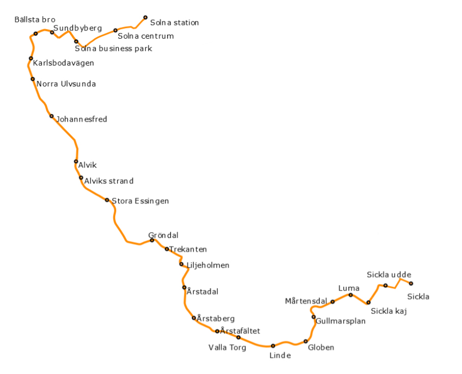
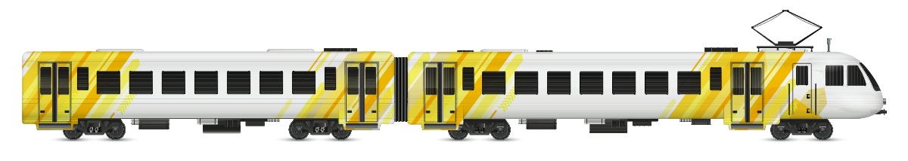

tram Destination : {{item.Destination}}
tram Stop Area : {{item.StopAreaName}}
tram Display : {{item.DisplayTime}}

tram Destination : {{item.Destination}}
tram Stop Area : {{item.StopAreaName}}
tram Display : {{item.DisplayTime}}
sorry no trams are available now
sorry, We are down for maintenance
Come Back Soon.
{{errorMsg}}